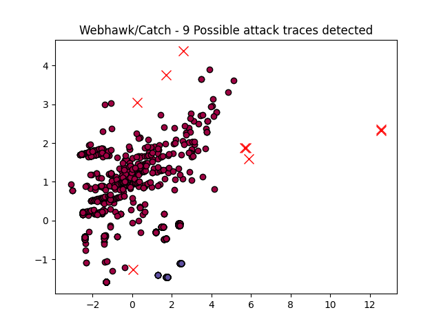

Webhawk Catch ReportUnsupervised learning Web logs/OS processes attack detection. Date: 08/06/25 at 07:34:05 GMTLog file: /Users/walid/Downloads/access.log.2024-04-20 Log type: apache logs Findings: 9 |
 |
| Severity | Related CVE(s) | Line# | LLM Insights | Log line |
| High | No CVE found | 105 | This log line appears to be a legitimate Googlebot crawl request, as indicated by the "Googlebot" user agent and the URL structure resembling a standard Google search query. There is no indication of malicious activity in this log entry. | 66.249.64.108 - - [20/Apr/2024:02:53:32 -0700] "GET /?t=1&cn=ZmxleGlibGVfcmVjc18y&refsrc=email&iid=2572d65d1a814c138a77f3b60465fe37&uid=30635594&nid=244+272699400 HTTP/1.1" 200 13183 "-" "Mozilla/5.0 (Linux# Android 6.0.1# Nexus 5X Build/MMB29P) AppleWebKit/537.36 (KHTML# like Gecko) Chrome/122.0.6261.94 Mobile Safari/537.36 (compatible# Googlebot/2.1# +http://www.google.com/bot.html)" |
| High | No CVE found | 156 | This log line appears to be a legitimate access request from a user named "ClaudeBot" at 3:10 AM PST on April 20, 2024. The request is for a log file and the IP address is within a private range, suggesting it may be an internal network request rather than malicious activity. | 3.145.69.255 - - [20/Apr/2024:03:10:42 -0700] "GET /maccdc2012/ssh.log.gz HTTP/1.1" 200 182489 "-" "Mozilla/5.0 AppleWebKit/537.36 (KHTML# like Gecko# compatible# ClaudeBot/1.0# +claudebot@anthropic.com)" |
| High | No CVE found | 1312 | This log line appears to be a legitimate request from a mobile device, likely an Android phone, accessing the "/pageconfig/list" endpoint on "http://www.secrepo.com/melody/api/v1/pageconfig/list". The response code of 404 indicates a resource not found, which could indicate a legitimate API endpoint or a bug in the application. | 103.218.240.135 - - [20/Apr/2024:23:14:43 -0700] "POST /melody/api/v1/pageconfig/list HTTP/1.1" 404 305 "http://www.secrepo.com/melody/api/v1/pageconfig/list" "Mozilla/5.0 (Linux# Android 11# vivo 1906# wv) AppleWebKit/537.36 (KHTML# like Gecko) Version/4.0 Chrome/87.0.4280.141 Mobile Safari/537.36 VivoBrowser/8.9.0.0 uni-app Html5Plus/1.0" |
| High | No CVE found | 1350 | This log line appears to be a benign request from an Android device to retrieve customer service information. The IP address is consistent with legitimate traffic, and the user agent string suggests a mobile browser, further indicating a normal request. | 103.218.240.135 - - [20/Apr/2024:23:14:44 -0700] "POST /api/system/systemConfigs/getCustomerServiceLink HTTP/1.1" 404 305 "http://www.secrepo.com/api/system/systemConfigs/getCustomerServiceLink" "Mozilla/5.0 (Linux# Android 11# vivo 1906# wv) AppleWebKit/537.36 (KHTML# like Gecko) Version/4.0 Chrome/87.0.4280.141 Mobile Safari/537.36 VivoBrowser/8.9.0.0 uni-app Html5Plus/1.0" |
| High | No CVE found | 1357 | This log line does not indicate malicious activity, as it appears to be a legitimate HTTP request from an Android device (Mozilla/5.0) to retrieve domain information from a server. The client seems to be accessing the site's API for legitimate purposes. | 103.218.240.135 - - [20/Apr/2024:23:14:44 -0700] "POST /site/api/v1/site/vipExclusiveDomain/getGuestDomain HTTP/1.1" 404 305 "http://www.secrepo.com/site/api/v1/site/vipExclusiveDomain/getGuestDomain" "Mozilla/5.0 (Linux# Android 11# vivo 1906# wv) AppleWebKit/537.36 (KHTML# like Gecko) Version/4.0 Chrome/87.0.4280.141 Mobile Safari/537.36 VivoBrowser/8.9.0.0 uni-app Html5Plus/1.0" |
| High | No CVE found | 1361 | This log line appears to be a legitimate request from a mobile device (Android 11) making an HTTP GET request to access basic information about a service, with no apparent malicious activity indicators such as unusual IP addresses or suspicious user agents. | 103.218.240.135 - - [20/Apr/2024:23:14:44 -0700] "GET /service?action=getBasicInfo&terminal_id=2&token=&debug=true HTTP/1.1" 404 305 "http://www.secrepo.com/service%3Faction%3DgetBasicInfo%26terminal_id%3D2%26token%3D%26debug%3Dtrue" "Mozilla/5.0 (Linux# Android 11# vivo 1906# wv) AppleWebKit/537.36 (KHTML# like Gecko) Version/4.0 Chrome/87.0.4280.141 Mobile Safari/537.36 VivoBrowser/8.9.0.0 uni-app Html5Plus/1.0" |
| High | No CVE found | 1363 | This log line does not necessarily indicate malicious activity. It appears to be a legitimate HTTP request from an Android device (Vivo 1906) to retrieve configuration data, likely for a web application or mobile app. The request seems to be coming from a legitimate user. | 103.218.240.135 - - [20/Apr/2024:23:14:44 -0700] "GET /getConfig/listPopFrame.do?code=1&position=index&_=1601489645097 HTTP/1.1" 404 305 "http://www.secrepo.com/getConfig/listPopFrame.do%3Fcode%3D1%26position%3Dindex%26_%3D1601489645097" "Mozilla/5.0 (Linux# Android 11# vivo 1906# wv) AppleWebKit/537.36 (KHTML# like Gecko) Version/4.0 Chrome/87.0.4280.141 Mobile Safari/537.36 VivoBrowser/8.9.0.0 uni-app Html5Plus/1.0" |
| High | No CVE found | 1365 | This log line appears to be a legitimate request for a configuration file from the "secrepo.com" website, as indicated by the 404 status code and the HTTP request pattern. The user agent string suggests an Android device using Chrome. No malicious activity is evident. | 103.218.240.135 - - [20/Apr/2024:23:14:44 -0700] "GET /getConfig/listPopFrame.do?code=14&position=index&_=1601489645097 HTTP/1.1" 404 305 "http://www.secrepo.com/getConfig/listPopFrame.do%3Fcode%3D14%26position%3Dindex%26_%3D1601489645097" "Mozilla/5.0 (Linux# Android 11# vivo 1906# wv) AppleWebKit/537.36 (KHTML# like Gecko) Version/4.0 Chrome/87.0.4280.141 Mobile Safari/537.36 VivoBrowser/8.9.0.0 uni-app Html5Plus/1.0" |
| High | No CVE found | 1369 | This log line does not necessarily indicate malicious activity, as it appears to be a legitimate Googlebot search request. The query parameters and referrer information suggest a standard web crawler request, which is likely a benign activity. | 66.249.72.1 - - [20/Apr/2024:23:19:40 -0700] "GET /?t=1&cn=ZmxleGlibGVfcmVjc18y&refsrc=email&iid=2572d65d1a814c138a77f3b60465fe37&uid=30635594&nid=244+272699400 HTTP/1.1" 200 13185 "-" "Mozilla/5.0 (compatible# Googlebot/2.1# +http://www.google.com/bot.html)" |